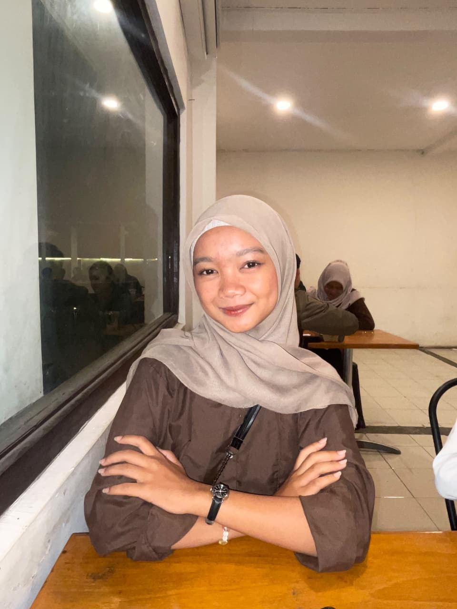

Jaancoque
Biodata diri
Ikan sepat ikan tongkol, selamat datang ya tol^^
Tentang
Pendidikan
SMK Negeri 1 Kertosono
Rekayasa Perangkat Lunak (RPL)
Hobi & Minat
- Mendengarkan Musik
- Membaca
- Mendaki

Biodata diri
Ikan sepat ikan tongkol, selamat datang ya tol^^
Rekayasa Perangkat Lunak (RPL)